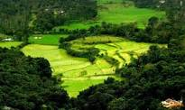

Tourist Guide
Coorg

Coorg or Kodagu as it is officially known now, is an astonishing land in the heart of the southern Indian peninsula. This unspoilt “country of million hills”, situated on the slopes of the Western Ghats, is India’s coffee bowl. The tiny district in the state of Karnataka is the biggest producer of coffee.
Madikeri or Mercara as it was known when it was once ruled by the British, is the district headquarters and situated at an elevation of 1,140m. Dotted with red-tiled bungalows, the town has an old world charm about it. The British who colonized Coorg and set up coffee plantations prior to Independence, compared Coorg to Scotland as both the places had grand and regal highlands with a sturdy mountain-dwelling race.